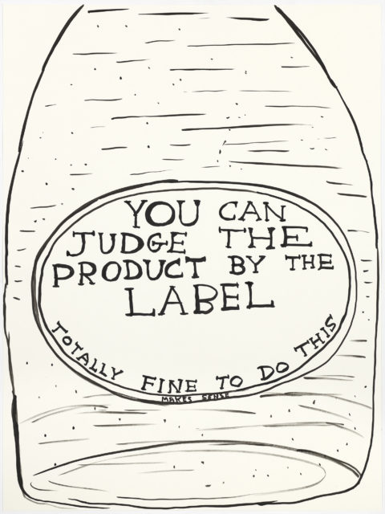

1.1 Describing the content and layout for each page
I have decided to have a homepage where the “about me” segment will be with links to the answers to Unit 1 and 2 Outcomes each on separate pages. I believe I will intersperse relevant David Shrigley images at appropriate points throughout the text. Each page shall have the references used and a link provided underneath then when clicked will open the desired page in a new tab. I will have to have a separate CSS file that will size the pictures as desired, change the text and hopefully make the website more appealing.

1.5 Describing copyright and other constraints affecting websites
Certain logos and images will be subject to copyright including peoples likenesses. An individual or organisation may not wish to associate themselves with whatever your website is engaged with and or disagree with what message is being portrayed. Copyright basically applies to the use of images and other content and it is important that one's use of said images falls under fair use where by then a license is not necessary. The purpose for the use of the image determines whether or not it falls under fair use. The use of an image for critical purposes such as a review or a news article falls under fair use as does educational purposes such as research or teaching.
1.6 Describing access issues that need taking into account - describe issues that people with disabilities may face when using web pages and how we can overcome them
The visually impared need to be taken into account as obviously they will not be able to see the screen. Screen-readers are a necessary tool here and it must be ensured that they are compatible with the finished product. “As you can imagine, blind users do not see the contents of a webpage like sighted users do. Instead they rely on screen readers to read out the content and generally rely on them to navigate the web” [10].
The deaf must also be taken into account here “the use of simple, clear language will help to ensure that deaf or hard of hearing people can access the information on your web pages. If you use audio or video provide text-based transcripts and closed captioning.” [11].
People with learning difficulties such as dyslexia may also need to be considered, when doing so its best to “design simple uniform screen layouts (with the option of only viewing one thing at a time), keep jargon to a minimum and use plain language and avoid pages overloaded with too many distractions (like flashing graphics) or too many choices (like a large cumbersome navigation system).” [11].
1.7 Describe which are the appropriate file types for websites
Websites use HTML and more specifically these days HTML5 file types along with JPEG, PNG. MP4. PDF. Types of file [12].
https://www.ballyhoo.co.uk/What-are-the-Best-File-Formats-for-Your-Websites-Images.html[12]